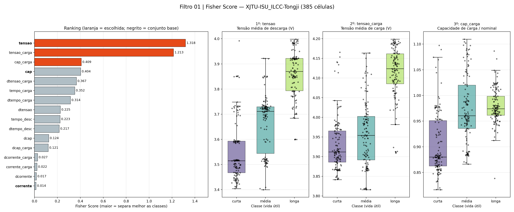
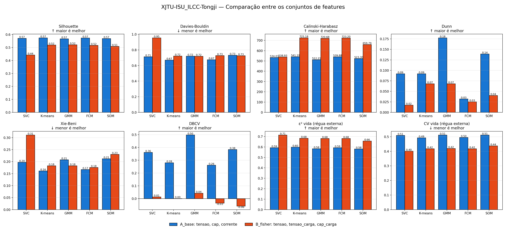
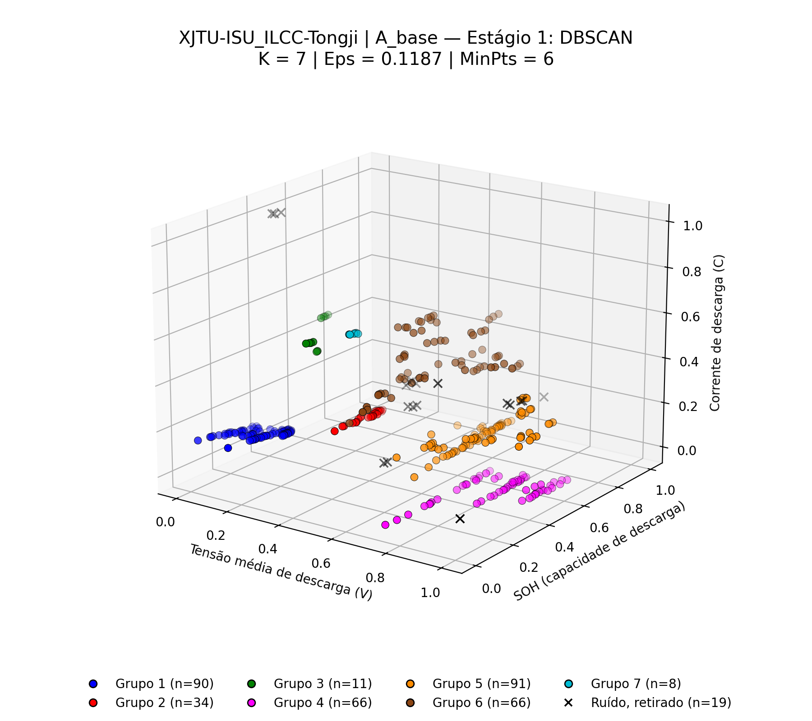
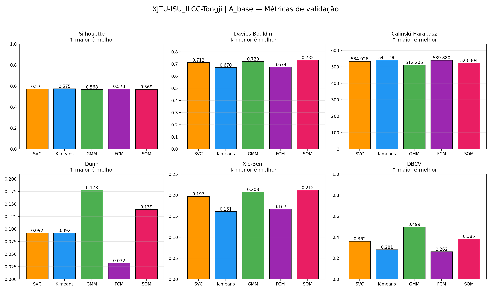
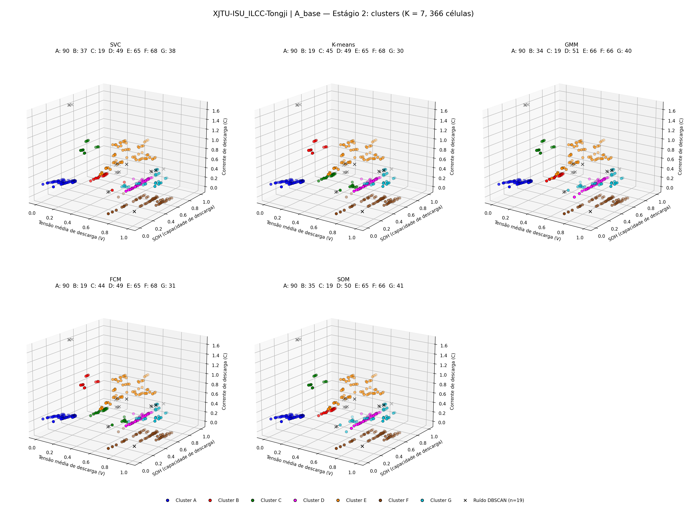
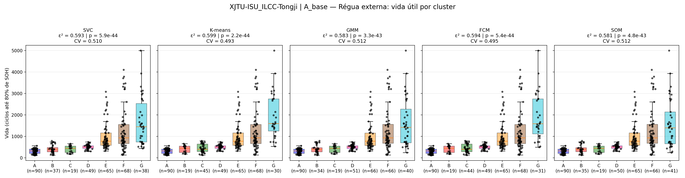
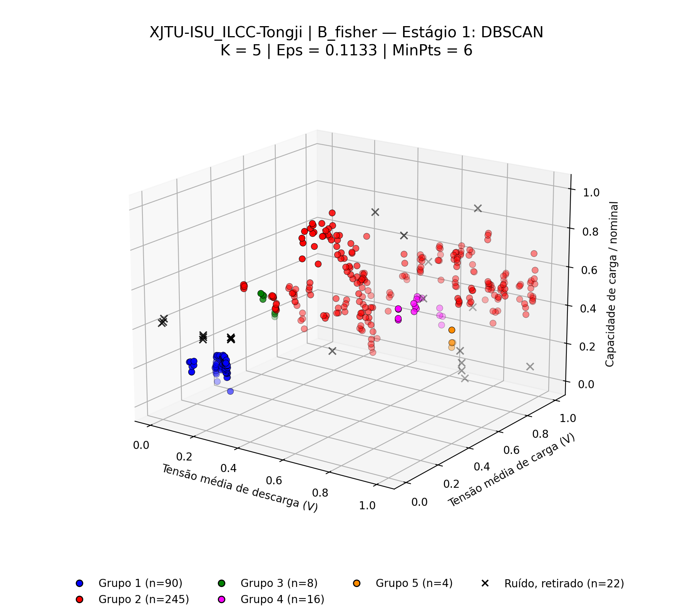
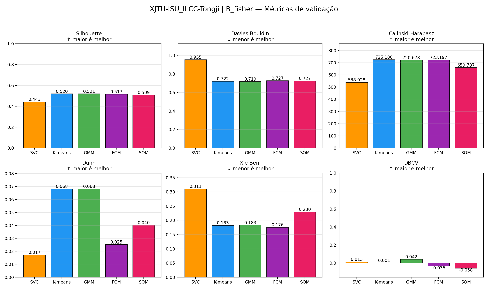
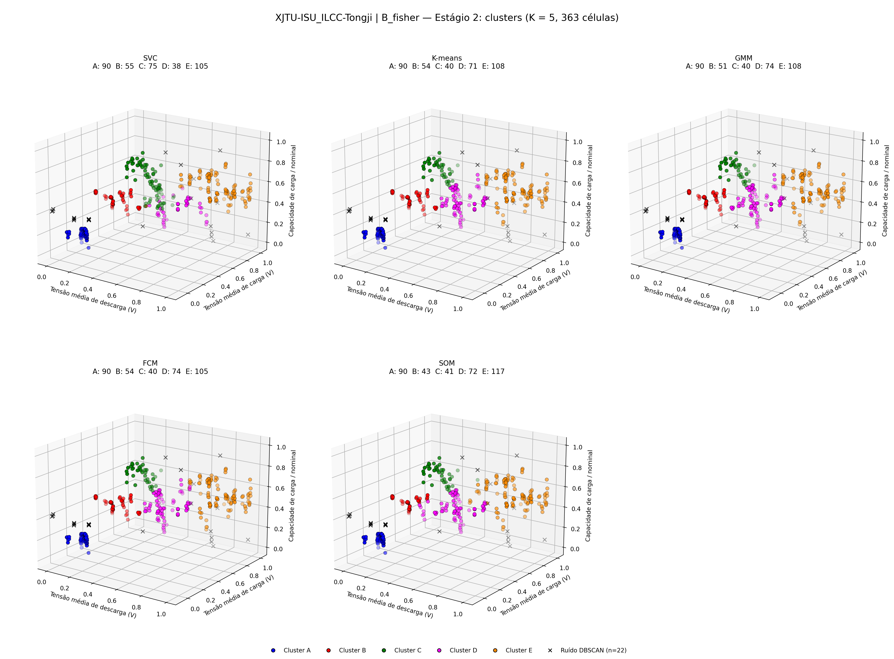
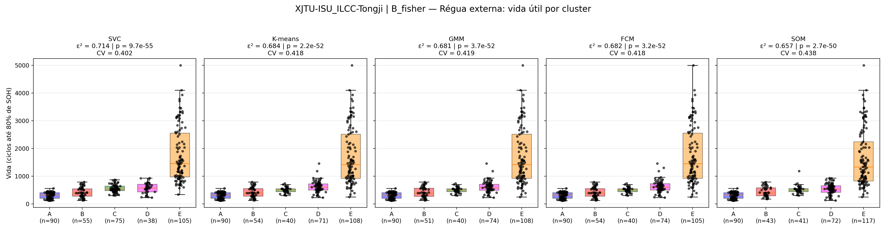

Seleção por filtro 01: Fisher Score (XJTU + ISU_ILCC + Tongji)
O Fisher Score ordena as features candidatas pela separação das 3 classes de vida útil; as 3 melhores formam o conjunto B_fisher, comparado com o conjunto base no mesmo teste (DBSCAN + 5 algoritmos, mesmas células).
A_base: tensao,cap,corrente · B_fisher: tensao,tensao_carga,cap_carga
ciclos 6–10 e 96–100 · MinPts = 6 · K = do DBSCAN · régua externa: vida útil (ε² do Kruskal-Wallis e CV), que favorece o B_fisher porque a vida escolheu as features dele
Resumo
Seleção das features: Fisher Score
Escolhidas: tensao, tensao_carga, cap_carga · base: tensao, cap, corrente

Ranking completo
| posição | feature | descrição | Fisher Score | situação | no conjunto base |
|---|---|---|---|---|---|
| 1 | tensao | Tensão média de descarga (V) | 1.3178 | escolhida | sim |
| 2 | tensao_carga | Tensão média de carga (V) | 1.2130 | escolhida | |
| 3 | cap_carga | Capacidade de carga / nominal | 0.4092 | escolhida | |
| 4 | cap | SOH (capacidade de descarga) | 0.4039 | sim | |
| 5 | dtensao_carga | Δ Tensão média de carga (V) | 0.3669 | ||
| 6 | tempo_carga | Tempo de carga (h) | 0.3523 | ||
| 7 | dtempo_carga | Δ Tempo de carga (h) | 0.3142 | ||
| 8 | dtensao | Δ Tensão média de descarga (V) | 0.2254 | ||
| 9 | tempo_desc | Tempo de descarga (h) | 0.2235 | ||
| 10 | dtempo_desc | Δ Tempo de descarga (h) | 0.2167 | ||
| 11 | dcap | Δ SOH (capacidade de descarga) | 0.1243 | ||
| 12 | dcap_carga | Δ Capacidade de carga / nominal | 0.1208 | ||
| 13 | dcorrente_carga | Δ Corrente média de carga (C) | 0.0274 | ||
| 14 | corrente_carga | Corrente média de carga (C) | 0.0223 | ||
| 15 | dcorrente | Δ Corrente de descarga (C) | 0.0169 | ||
| 16 | corrente | Corrente de descarga (C) | 0.0138 | sim |
Comparação entre os conjuntos

Placar: em quantos algoritmos cada conjunto ganhou cada métrica
| A_base | B_fisher | |
|---|---|---|
| métrica | ||
| Silhouette | 5 | 0 |
| Davies-Bouldin | 3 | 2 |
| Calinski-Harabasz | 0 | 5 |
| Dunn | 5 | 0 |
| Xie-Beni | 4 | 1 |
| DBCV | 5 | 0 |
| ε² vida | 0 | 5 |
| CV vida | 0 | 5 |
| TOTAL internas | 22 | 8 |
| TOTAL régua da vida | 0 | 10 |
A_base: tensao, cap, corrente
células: 385 · ruído: 19 · células no estágio 2: 366 · K DBSCAN: 7 · K usado: 7 · Eps: 0.1187 · maior ε² vida: K-means (0.599)
Situação: ok




Tabela de métricas
| Silhouette | Davies-Bouldin | Calinski-Harabasz | Dunn | Xie-Beni | DBCV | ε² vida | p (Kruskal-Wallis) | CV vida | |
|---|---|---|---|---|---|---|---|---|---|
| SVC | 0.5713 | 0.7124 | 534.0260 | 0.0921 | 0.1972 | 0.3616 | 0.5931 | 0.0 | 0.5096 |
| K-means | 0.5747 | 0.6700 | 541.1896 | 0.0921 | 0.1612 | 0.2811 | 0.5986 | 0.0 | 0.4927 |
| GMM | 0.5677 | 0.7204 | 512.2060 | 0.1776 | 0.2079 | 0.4986 | 0.5834 | 0.0 | 0.5116 |
| FCM | 0.5734 | 0.6738 | 539.8795 | 0.0320 | 0.1668 | 0.2620 | 0.5935 | 0.0 | 0.4955 |
| SOM | 0.5691 | 0.7324 | 523.3037 | 0.1391 | 0.2121 | 0.3845 | 0.5813 | 0.0 | 0.5117 |
B_fisher: tensao, tensao_carga, cap_carga
células: 385 · ruído: 22 · células no estágio 2: 363 · K DBSCAN: 5 · K usado: 5 · Eps: 0.1133 · maior ε² vida: SVC (0.714)
Situação: ok




Tabela de métricas
| Silhouette | Davies-Bouldin | Calinski-Harabasz | Dunn | Xie-Beni | DBCV | ε² vida | p (Kruskal-Wallis) | CV vida | |
|---|---|---|---|---|---|---|---|---|---|
| SVC | 0.4426 | 0.9547 | 538.9275 | 0.0173 | 0.3107 | 0.0134 | 0.7140 | 0.0 | 0.4016 |
| K-means | 0.5199 | 0.7220 | 725.1804 | 0.0682 | 0.1827 | 0.0008 | 0.6839 | 0.0 | 0.4179 |
| GMM | 0.5211 | 0.7185 | 720.6784 | 0.0682 | 0.1830 | 0.0419 | 0.6810 | 0.0 | 0.4193 |
| FCM | 0.5165 | 0.7274 | 723.1967 | 0.0253 | 0.1757 | -0.0346 | 0.6817 | 0.0 | 0.4176 |
| SOM | 0.5092 | 0.7265 | 659.7868 | 0.0403 | 0.2303 | -0.0581 | 0.6570 | 0.0 | 0.4381 |